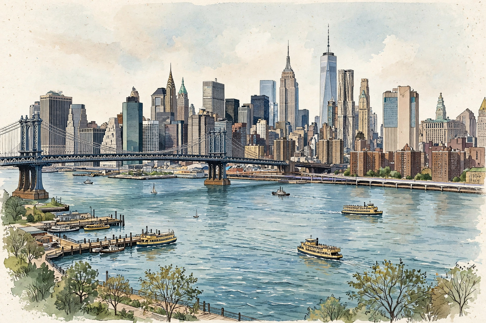

The latest
The latest from The New Yorker

The New Yorker's homepage presents the magazine's mix: news reporting and the Daily Comment, profiles and long features, cultural criticism, fiction and poetry, humour and the famous cartoons — with Eustace Tilley, the monocled dandy of its first cover, as mascot.
News
Reporting and daily comment
The news desk's coverage and analysis.
Culture
Criticism: books, film, theatre, art
The critics' pages.
Fiction & Poetry
The magazine's literary heart
Short stories and poems.
Cartoons
The Cartoon Bank
Daily cartoons and the caption contest.
Latest & most read
- This week's issue: table of contents
- The New Yorker Radio Hour and podcasts
- Goings On: the week's cultural listings
About
Background on this news organisation: Wikipedia article.